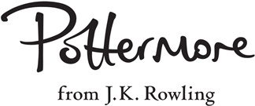

Découvrez tous les secrets du J.K. Rowling’s Wizarding World...
Rendez-vous sur www.pottermore.com et participez à la cérémonie de la Répartition. Découvrez des nouvelles exclusives écrites par J.K. Rowling ainsi que les dernières actualités et les derniers articles sur le monde des sorciers.
Pottermore, société d’édition numérique, de commerce électronique et d’information de J.K. Rowling, est l’éditeur numérique mondial de la saga Harry Potter et le magazine d’actualité du J.K. Rowling’s Wizarding World. Gardien de ses secrets, pottermore.com se targue d’ouvrir les portes de l’imagination. Vous trouverez sur notre site toute l’actualité sur la saga ainsi que des nouvelles inédites écrites de la main de l’auteur.